{kind=link}
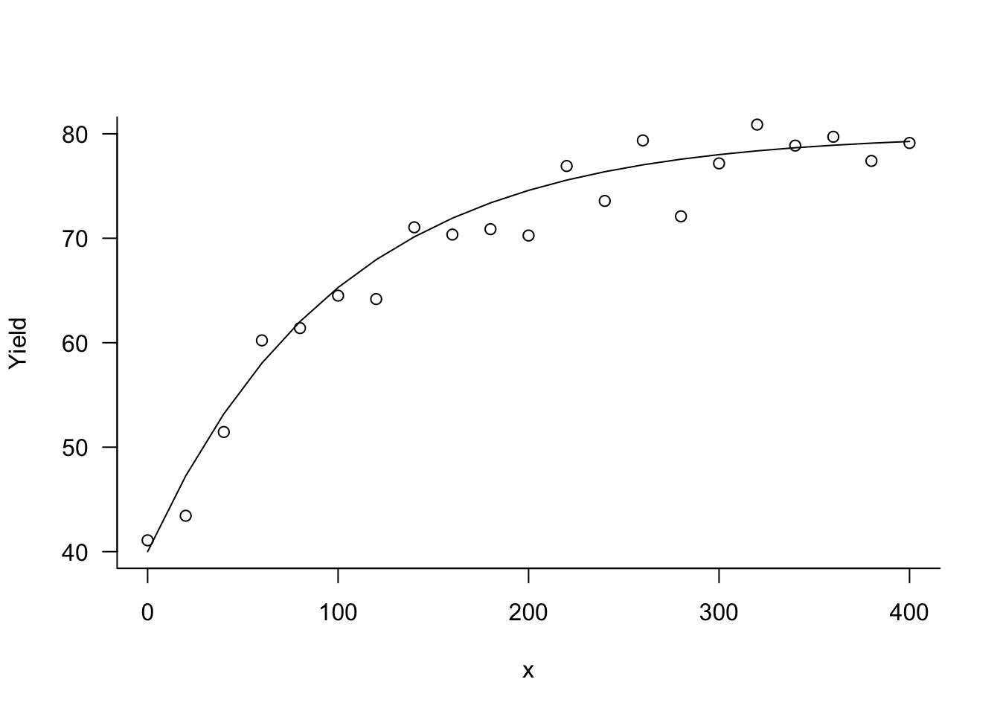
37 Interpretability and Explainability
37.1 Introduction
You do not have to look very hard these days to come across terms such as interpretable machine learning, explainable AI (xAI), responsible AI, ethical AI, and others in the discourse about data analytics, machine learning, and artificial intelligence. This chapter deals with questions of interpreting and explaining models derived from data, not with the ethical aspects of the discipline. Although one could argue that working with models that we are unable to explain how they work is not a responsible thing to do.
Interpretability and explainability are often used interchangeably. It is worthwhile making a distinction. We draw in this chapter on the excellent online book “Interpretable Machine Learning” (Molnar 2022) although by the author’s definition, most of the book is concerned with explaining models.
Definition: Interpretability and Explainability
A system is interpretable if it is capable of being understood. In such a system the change that follows when a knob is turned is known. Someone trained in the arts can articulate how the system works, how input is transformed into output. The qualifier “trained in the arts” is added because some threshold of knowledge must be assumed. An internal combustion engine is interpretable, it is capable of being understood—but not by everyone.
A system is explainable if we can understand how something happened, how it came up with its answers. The difference to interpretability is subtle. Interpreting focuses on the engine of the system, how it transforms input into output. Explaining focuses on the output side of the system, trying to understand what makes the box work without understanding how the box works (Figure 37.1).
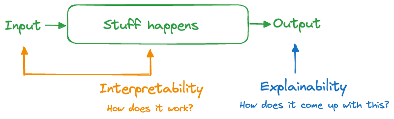
An internal combustion engine is interpretable: gas and air are mixed, compressed, and ignited. The force of the ignition moves one or more pistons which turns a crank shaft. In a car or motorcycle, this motion is translated into tire rotation. The internal combustion engine is also explainable: if I step on the gas pedal the engine revs higher and the car goes faster.
A system that is interpretable is always explainable, but not the other way around. Clearly, we prefer interpretable systems over those that are just explainable.
Why Do we Care?
Replace “systems” with “models based on data” in the previous paragraphs and you see how concepts of interpretability and explainability apply to statistical models and machine learning. We care about the topic and about the distinction for several reasons:
Model interpretability is generally on the decline. The need for transparency, on the other hand, is on the rise. Decisions have consequences and someone or something has to be accountable for them.
There is an inverse relationship between model complexity and interpretability. Simple, interpretable models often do not perform well. The measures we take to improve their performance tend to reduce their interpretability. A great example are decision trees. A single tree is highly interpretable, we say it is intrinsically interpretable, its very structure as a tree lends its interpretation. However, a single tree often does not perform well, it has high variance and is sensitive to changes in the data. An ensemble of decision trees, such as in a random forest or a gradient boosting machine, can perform extremely well, but now we have sacrificed interpretability. Instead of a single tree, a collection of 50, 100, or 500 trees are generating a predicted value. A single decision rule was replaced by 500 decision rules.
Any model can be made less interpretable by adding features. A linear regression model is intrinsically interpretable, but add more inputs, their transformations and interactions, and the entire model becomes much less understandable.
Models are increasingly seen as a source of risk. As with all risks, that means we need to manage it (understand, contain, insure). A risk that is not understood is difficult to guard against. Ironically, the more complex models that perform well carry a larger risk by virtue of being difficult to understand.
A Continuum
Interpretability is not an all-or-nothing proposition. As mentioned before, any model becomes less interpretable by adding features.
It is best to think of a spectrum of interpretability and the methods we consider to model data fall somewhere on the spectrum—with room for discussion and movement (Figure 37.2). An expert in artificial neural networks might find them to be more interpretable than an occasional user. It is clear from the figure that more contemporary and currently popular analytic methods tend to appear on the right hand side.
On the left hand side of the figure are what we call intrinsically interpretable models. Interpretable models are transparent and can be understood. Intrinsically interpretable models can be understood by looking at the model structure. Single decision trees, simple linear regressions, and nonlinear models that are parameterized in terms of domain-specific quantities and relationships are intrinsically interpretable. Sankaran (2024) calls intrinsically interpretable models glass boxes to distinguish them from non-interpretable black boxes.
Example: Mitscherlich Equation
In Section 9.3 we encountered the Mitscherlich equation, popular in modeling plant and crop yield:
\[ \text{E}[Y] = \lambda + (\xi-\lambda) \exp\left\{ -\kappa x\right\} \]
The Mitscherlich yield equation is intrinsically interpretable. The parameters have a direct interpretation in terms of the subject matter (Figure 37.3):
- \(\xi\): the crop yield at \(x=0\)
- \(\lambda\): the upper yield asymptote as \(x\) increases
- \(\kappa\): is related to the rate of change, how quickly the yield increases from \(\xi\) to \(\lambda\)
It is also clear how “turning a knob” in the model changes the output. For example, raising or lowering \(\lambda\) affects the asymptotic yield. Changing \(\kappa\) affects the shape of the yield curve between \(\xi\) and \(\lambda\).
Example: First-order Compartmental Model
Figure Figure 37.4 shows a first-order compartmental model for the concentration of a drug in patients over time. The concentration \(C_t\) at time \(t\) is modeled as a function of dose \(D\) as \[ \text{E}[C_t] = \frac{D k_e k_a}{Cl(k_a - k_e)} \left \{ \exp(-k_e t) - \exp(-k_a t) \right \} \] The model is intrinsically interpretable. The parameters represent
- \(k_e\): the elimination rate of the drug
- \(k_a\): the absorption rate of the drug
- \(Cl\): the clearance of the drug
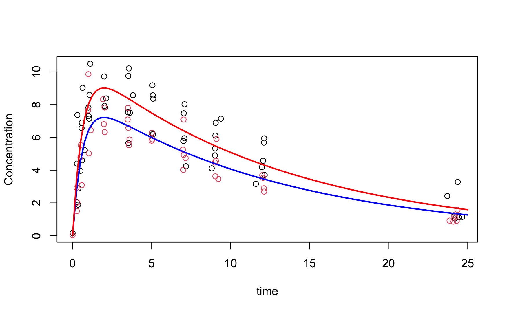
Linear regression models are intrinsically interpretable. In the simple linear model \[ \text{E}[Y] = \beta_0 + \beta_1 x \] \(\beta_0\) is the mean response when \(x=0\), \(\beta_1\) represents the change in mean response when \(X\) increases by one unit. The model is still intrinsically interpretable when more input variables are added, but the interpretation is more nuanced. In the model \[ \text{E}[Y] = \beta_0 + \beta_1 x_1 + \beta_2x_2 + \beta_3x_3 \] \(\beta_j\) (\(j=1,2,3)\) is no longer the change in mean response if \(x_j\) increases by one unit. It is the change in mean response if \(X_j\) increases by one unit and all other \(X\)s are held fixed. Add more inputs, factors, feature transformations, and interaction terms and the interpretation becomes even more nuanced.
Adding regularization can make a model more interpretable or less interpretable. Ridge (\(L_2\)) regularization does not help with interpretability because it assigns non-zero weight to the model coefficients. A model with 1,000 inputs does not become more interpretable by shrinking 1,000 coefficients somewhat. Lasso (\(L_1\)) regularization increases interpretability because it shrinks coefficients all the way to zero, combining regularization with feature selection.
Ensemble methods are less interpretable than their non-ensembled counterparts such as a single decision tree (Figure 37.5).
{kind=link}
Highly over-parameterized nonlinear models such as artificial neural networks are completely uninterpretable. These are the proverbial black boxes and being able to explain the model output is the best one can hope for. Figure 37.6 is a schema of AlexNet, a convolutional neural network that won the ImageNet competition in 2012. The schema tells us how AlexNet is constructed but it is impossible to say how exactly it works. We cannot articulate how an input is transformed into the output, we can only describe what happens to it: it is going through a 11 x 11 convolutional layer with 96 kernels, followed by a max pooling layer, and so on.
{kind=link}
The Mind Map
Figure 37.7 is our mind map for model interpretability and explainability. We spend most of the time on the explainability side, trying to determine what drives a particular model. For non-interpretable model, trying to explain how a model arrives at an outcome is all that one can hope for.

Explainability tools are categorized in two dimensions:
Model-agnostic tools and model-specific tools. Model-agnostic tools can be applied to any model family, whether it is an artificial neural network, a support vector machine, \(k\)-nearest neighbor, or a nonlinear regression. That makes them very popular because you can apply your favorite explainability tool to whatever statistical learning technique was used.
As the name suggests, model-specific tools are developed for a specific type of model. For example, explainability tools that deal specifically with neural networks or gradient boosting machines. The specialization enables computational tricks and specialized algorithms. For example, TREESHap was developed to compute Shapley-based measures (see below) for random forests and gradient boosting. It takes care of the special structure when ensembling trees and is much faster than a model-agnostic Shapley tool. This is relevant because computing measures of explainability can be very time consuming.Global and local methods. The distinction of global and local explainability tools is different from our distinction of global and local models in Section 6.2. A global explainability method focuses on the model behavior overall, across all observations. A local method explains the individual predictions or classifications, at the observation level. Some approaches, for example, Shapley values, can be used in a local and a global context. In most cases, however, aggregating a local measure across all observations does not yield a corresponding global measure.
Words of Caution
An important aspect of explainability is the focus on the outcome of the model and understanding the model’s drivers. This cannot be overemphasized. The tools cannot inform us about the true underlying mechanisms that act on the target. They can only inform us about the model we built. Applying explainability tools to a crappy model does not suddenly reveal some deep insight about the underlying process. It reveals insight into what makes the crappy model tick. We are not validating a model, we are simply finding out what the model can tell us about itself.
Explainability tools are not free of assumptions. If these are not met the results can be misleading. A common assumption is that features are “uncorrelated”. We put this in quotes as the features in a model are usually not considered random variables, so they cannot have a correlation in the statistical sense. What is meant by uncorrelated features is that the inputs can take on values independently of each other. In most applications, that is an unrealistic assumption; inputs change with each other, they are collinear. The implications of not meeting the assumption are significant.
Suppose you are predicting the value of homes based on two inputs: the living area in ft2 and the number of bedrooms. The first variable ranges in the data set from 1,200 to 7,000 ft2 and the number of bedrooms varies from 1–10. The assumption of “uncorrelated features” implies that you can pair values of the variables independently. An explainability method such as partial dependence plots will evaluate the impact of the input variable number of bedrooms by averaging over living areas of 1,200–7,000 ft2. In evaluating the impact of living area, the procedure averages across houses with 1–10 bedrooms. A 7,000 ft2 home with one bedroom is unlikely and a 1,200 ft2 home with 10 bedrooms is also difficult to find. A method that assumes “uncorrelated features” will behave as if those combinations are valid. You probably would not start the human-friendly explanation to the CEO with
we evaluated the importance of factors affecting home prices by considering mansions with a single bedroom and tiny houses with nothing but sleeping quarters…
but that is exactly what the explainability tool is giving you. Imagine a model developed for the lower 48 states of the U.S. that contains season (Winter, Spring, Summer, Fall) and average daily temperature as inputs and evaluating the impact of summer months for average daily temperature in the freezing range. It makes no sense.
Explainability tools are not free of parameters and require choices that affect their performance. These tools use bandwidths, kernel functions, subsampling, surrogate model types, etc. Software has default settings which might or might not apply to a particular model and data combination.
Another issue to look out for is the data requirement of the explainability tool itself. Some methods are based on analyzing predictions of a model while others need access to the original training data. If the only way to study a model is by analyzing predictions returned from an API, you are limited to methods that can be carried out without access to the training data.
Good Explanations
Before we dive into the math and applications of the tools itself, let’s remind ourselves that running explainability tools is not the end goal. A business decision maker is not helped by a Shapley summary or ten partial dependence plots any more as they are helped by a list of regression coefficients. While explainability tools can generate nice summaries and visualizations, by themselves they do not provide an explanation.
In the end the data scientist has to convert the output from the tools into a human-consumable form. Molnar (2022) discusses the ingredients of human-friendly explanations. We summarize some of his excellent points. Good explanations
are contrastive; they compare a prediction to another instance in the data, they use counterfactuals, what has not happened:
Why did the drug not work for my patient?
Why was the predicted home price higher than expected?are selective (sparse); focus on the main factors, not all factors. Keep explanations short, giving up to 3 reasons:
The Washington Huskies lost to the Michigan Wolverines because they could not get their usually explosive offense going.are social; the explanation is appropriate for the social context in which it is given. Charlie Munger explained EBITDA (earnings before interest, taxes, depreciation, and amortization) at the 2003 Berkshire Hathaway annual meeting as follows:
“You wold understand any presentation using the words EBITDA, if every time you saw that word you just substituted the phrase bullshit earnings.”focus on the abnormal in the explanation if abnormal features impact the outcome:
The predicted price of the house was high because it has 16 balconies.are general; in the absence of abnormal features that drive the explanation good explanations are probable:
The credit score is low for individuals who carry a lot of debt.
The house is expensive because it is big.
37.2 Model-agnostic Explainability
Partial Dependence Plots (PDP)
Partial dependence plots (PDP) are a global method that summarizes the marginal effects of input variables across a data set. The plots are typically 1-D or 2-D dependence plots, meaning that they show the marginal effect of one variable or of two variables together. 1-D plots are most common; they display the average response across the daa set as one input variable takes on different values.
Suppose a model contains \(p\) features \(X_1, \cdots, X_p\). In the one-dimensional case we choose one of the features, \(X_j\) say, and all other features form a complement set \(X_\mathcal{C}\). The partial dependence function for \(X_j\) is defined as \[ f(X_j) = \text{E}_{X_\mathcal{C}}\left[f(X_j,X_\mathcal{C})\right] \] where the expectation is taken with respect to the joint distribution of the input variables in \(X_\mathcal{C}\) (assuming that the \(X\)s are random). The partial dependence function is not observable but can be estimated as \[ \widehat{f}(X_j) = \frac{1}{n} \sum_{i=1}^n f(X_j,x_{i\mathcal{C}}) \] where \(x_{i\mathcal{C}}\) are the values of the complement features in the training data. In practice you vary the values of the feature of interest (\(X_j\)) over the observed range (or the observed values). For each value \(x_j\) the average above is computed, substituting the observed values for all other inputs. The final result is presented as a plot of the \(\widehat{f}(x_j)\) versus \(x_j\) values.
In the two-dimensional case, the complement set \(X_\mathcal{C}\) contains all but two of the input variables, \(X_j\) and \(X_k\) are the features of interest for the PDP, and the averages are calculated as \[ \widehat{f}(X_j, X_k) = \frac{1}{n} \sum_{i=1}^n f(X_j,X_k,x_{i\mathcal{C}}) \] The results are presented as a three-dimensional plot (image plot, contour, etc.) of \(\widehat{f}_{X_j,X_k}\) against a grid of \(X_j, X_k\) values.
Example: Banana Quality
The data for this example can be found on kaggle and comprises observations on the quality of bananas (“Good”, “Bad”) and seven attributes. It was used previously in this material to demonstrate bagging and support vector machines.
We classify the observations in the training data set here with a random forest with 500 trees.
ban_train <- duckload("banana_train")
ban_test <- duckload("banana_test")library(randomForest)
set.seed(54)
rf <- randomForest(as.factor(Quality) ~ . ,
data=ban_train,
importance=TRUE)Figure 37.8 shows that the most important features with respect to improving model accuracy are Softness, Weight and HarvestTime. Two of the three are also most effective in increasing tree node purity.
varImpPlot(rf)
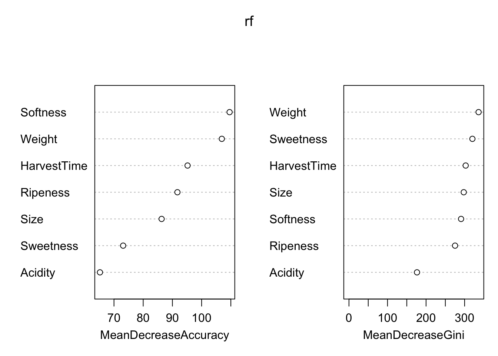
library(caret)
rf.predict <- predict(rf,newdata=ban_test)
rf.predict.cm <- caret::confusionMatrix(rf.predict,
as.factor(ban_test$Quality))
rf.predict.cmConfusion Matrix and Statistics
Reference
Prediction Bad Good
Bad 1930 58
Good 64 1948
Accuracy : 0.9695
95% CI : (0.9637, 0.9746)
No Information Rate : 0.5015
P-Value [Acc > NIR] : <2e-16
Kappa : 0.939
Mcnemar's Test P-Value : 0.6508
Sensitivity : 0.9679
Specificity : 0.9711
Pos Pred Value : 0.9708
Neg Pred Value : 0.9682
Prevalence : 0.4985
Detection Rate : 0.4825
Detection Prevalence : 0.4970
Balanced Accuracy : 0.9695
'Positive' Class : Bad
The confusion matrix for the test data set shows excellent accuracy of 96.95 % and high sensitivity and specificity.
How does the predicted probability of banana quality depend on the most important features? To answer this question we compute partial dependence plots for Sweetness, Weight, and HarvestTime with the iml package in R.
The iml package is based on R6 classes which gives it an object-oriented flavor. The first step is to set up a prediction container. Once this object is in place we can pass it to various functions to compute explainability measures. For example, the FeatureEffect class implements accumulated local effect plots, partial dependence plots, and individual conditional expectation curves. The FeatureImp class computes permutation-based feature importance.
library(iml)
ban.X <- ban_train[,which(names(ban_train) != "Quality")]
model <- Predictor$new(rf,
data=ban.X,
y=ban_train$Quality)Partial dependence plot for the three continuous inputs are requested with the FeatureEffects class and method="pdp". The plot methods of the result objects are based on ggplot2 and can be customized by adding ggplot2 functions.
pdp <- FeatureEffects$new(model,
features = c("Softness", "Weight", "HarvestTime"),
method="pdp")
pdp$plot() +
labs(title="Random Forest", subtitle="Banana Quality")
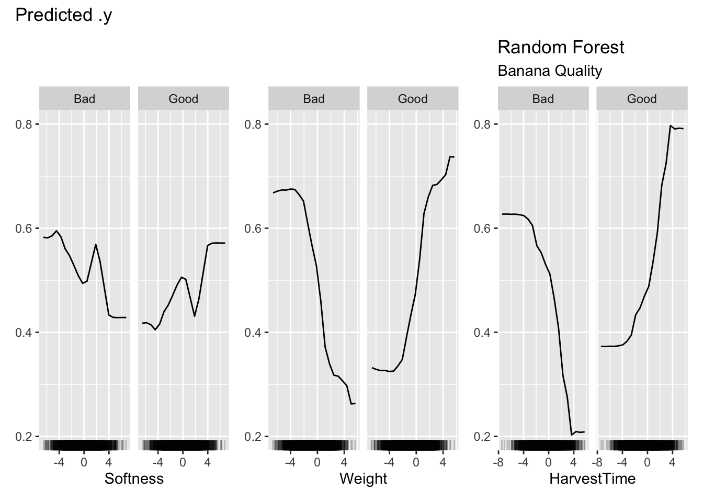
Figure 37.9 shows the partial dependence plots for the three inputs. The vertical axis displays the predicted probabilities, the probabilities for Good and Bad outcomes are complements of each other. Focusing on the PDP for Weight, we can see that the predicted probability for good banana quality initially does not change much for small values of the (scaled) weight, then increases quickly with increasing banana weight.
Each point on the PDP plots is calculated by averaging over the values of the other input variables for all 4,000 observations. The computational effort of the PDP plots is substantial.
Question
- What do PDP plots look like for a multiple linear regression model with only main effects?
- How do interactions between the features change the PDP plot?
Advantages
Partial dependence plots are intuitive, the concept of an average prediction at an input value is easy to grasp. They are also easy to implement. The partial dependence analysis reveals the impact of a feature on the average predicted value.
The partial dependence plots show how model predictions behave for a set of data. It does not matter whether this is training data or test data in the sense that the PDP shows what the model learned from the training data. The (average) predictions change with the values of the inputs in a certain way. This is in contrast to explainability tools that explicitly depend on a measure of model loss, such as feature importance summaries (see Section 37.2.3).
Disadvantages
Studying the partial dependence mostly focuses on individual features, rather than the joint impact of features. More than two features of interest cannot be visualized.
Care should be taken not to place too much emphasis on regions of the input space where data are sparse. The rug plot along the horizontal axis shows where data are dense and helps with interpretation of the PDP.
Interactions between inputs can mask the marginal effect. It might appear in a PDP that a particular feature has little impact on the predictions, when in fact it interacts with another feature in such a way that the average effect across the features is nil. The feature is still an important driver of the model, although a marginal plot does not reveal it.
The PDP is based on the assumption that the feature \(X_j\) for which the plot is computed is uncorrelated with the other features. In the banana quality example, the PDP variables show only small to modest pairwise correlations with the other features
round(cor(ban.X[,"Softness"] , ban.X),3) Size Weight Sweetness Softness HarvestTime Ripeness Acidity
[1,] 0.166 -0.181 -0.104 1 0.209 -0.237 -0.153round(cor(ban.X[,"Weight"] , ban.X),3) Size Weight Sweetness Softness HarvestTime Ripeness Acidity
[1,] -0.184 1 0.413 -0.181 -0.084 -0.049 0.444round(cor(ban.X[,"HarvestTime"], ban.X),3) Size Weight Sweetness Softness HarvestTime Ripeness Acidity
[1,] 0.573 -0.084 -0.2 0.209 1 0.112 -0.084Individual Conditional Expectation (ICE)
Individual Conditional Expectation (ICE) plots are a local version of the partial dependence display. They show predictions of \(f(X_j,X_\mathcal{S})\) on an observation basis. This is one local method that can be meaningfully aggregated to a global method: when averaged across all observations, ICE plots are partial dependence plots. It is thus common to overlay the plots at the observation level with the PDP.
Example: Abalone Age
Abalone is a common name for a group of marine snails (genus Haliotis), found worldwide in colder waters. The flesh of the abalone is widely considered a delicacy and their shells are used for jewelry. Per Wikipedia, the shell of abalone is particularly strong and made up of stacked tiles with a clingy substance between the tiles (Figure 37.10). When the shell is struck the tiles move rather than shatter.
The abalone data we use is available from the UC Irvine Machine Learning Repository and was originally collected by Nash et al. (1994).
The problem tackled here is to predict the age of abalone from physical measurements. Abalone are aged by the number of rings seen through a microscope. The process is time consuming, the shell needs to be cut through the cone, stained, and the rings are counted under a microscope. These rings appear in abalone shells after 1.5 years, so the age of the animal in years is 1.5 plus the number of rings.
The data comprise the following measurements on 4,177 animals:
- Sex: M, F, and I (infant)
- Length: Longest shell measurement (in mm)
- Diameter: perpendicular to length (in mm)
- Height: with meat in shell (in mm)
- Whole_Weight: whole abalone (in grams)
- Shucked_Weight: weight of meat (in grams)
- Viscera_Weight: gut weight after bleeding (in grams)
- Shell_Weight: after being dried (in grams)
- Rings: +1.5 gives the age in years
abalone <- duckload("abalone")
abalone$Sex <- as.factor(abalone$Sex)
head(abalone) Sex Length Diameter Height Whole_Weight Shucked_Weight Viscera_Weight
1 M 0.455 0.365 0.095 0.5140 0.2245 0.1010
2 M 0.350 0.265 0.090 0.2255 0.0995 0.0485
3 F 0.530 0.420 0.135 0.6770 0.2565 0.1415
4 M 0.440 0.365 0.125 0.5160 0.2155 0.1140
5 I 0.330 0.255 0.080 0.2050 0.0895 0.0395
6 I 0.425 0.300 0.095 0.3515 0.1410 0.0775
Shell_Weight Rings
1 0.150 15
2 0.070 7
3 0.210 9
4 0.155 10
5 0.055 7
6 0.120 8The following statements fit a model to predict the number of rings using a gradient boosting machine for Poisson data, using all input variables in the data frame. A Poisson distribution seems reasonable as we are dealing with count data and the average count is not large enough to justify a Gaussian approximation. Setting the interaction depth to 2 allows for two-way interactions between the input variables.
library(gbm)
set.seed(4876)
gbm_fit <- gbm(Rings ~ .,
data=abalone,
interaction.depth=2,
distribution="poisson",
cv.folds = 5)
gbm.perf(gbm_fit)[1] 100
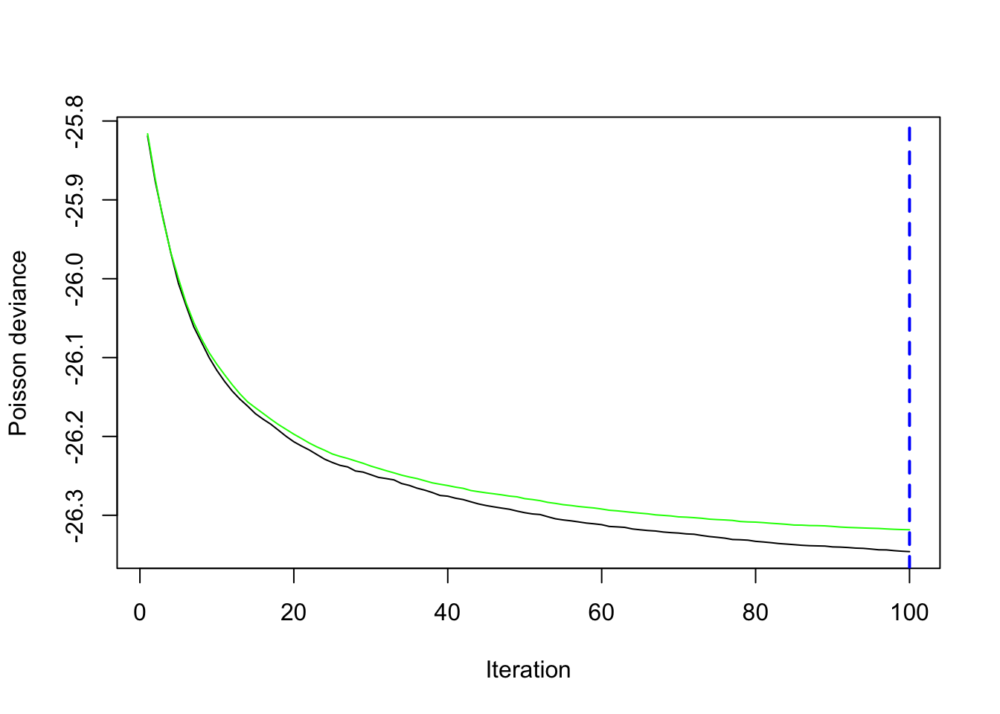
5-fold cross-validation is used to produce an estimate of the test error. Both test and training error are decreasing up until 100 boosting iterations (Figure 37.11). Predictions will be based on all 100 trees.
The following statements set up a prediction object for the gradient boosting machine in iml and request ICE plots with PDP overlay for three of the input variables.
X_data <- abalone[,1:8]
aba_model <- Predictor$new(gbm_fit,
data=X_data,
y=abalone$Rings)
ice_pdp <- FeatureEffects$new(aba_model,
features = c("Diameter","Height","Whole_Weight"),
method="pdp+ice")
ice_pdp$plot() +
labs(title="Gradient Boosting", subtitle="Abalone - ICE + PDP")
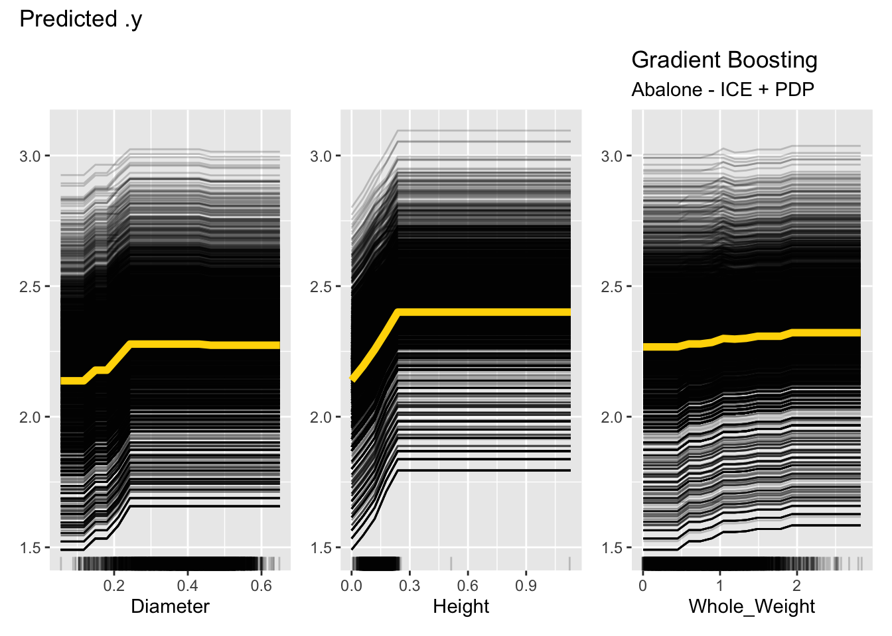
Figure 37.12 shows one issue with ICE plots, they become very busy for large data sets. Each plot is showing 4,177 trends and the overlaid PDP plot. Notice that for Height, the majority of the observations are below 0 and 0.3 mm, with a few very large values. The ICE and PDP plots cover the entire range of the observed data. One should limit the interpretation of these plots to the dense areas of the observed data; the rug dot plots help with that. Since both ICE and PDP plots assume uncorrelated features, this is especially important because observations are paired with observed values for the other inputs. Averaging predicted values for values that are rare over values for other variables that are extreme is dangerous.
For categorical features, ICE and partial dependence plots are generated for each level of the feature. Figure 37.13 shows the plots for the three-level Sex variables. There is considerable variation in the predicted number of rings, with the average predicted number being slightly smaller for infants (Sex=“I”) and about equal for male and female animals.
ice_pdp1 <- FeatureEffects$new(aba_model,
features = c("Sex"),
method="pdp+ice")
ice_pdp1$plot() +
labs(title="Gradient Boosting", subtitle="Abalone - ICE + PDP")
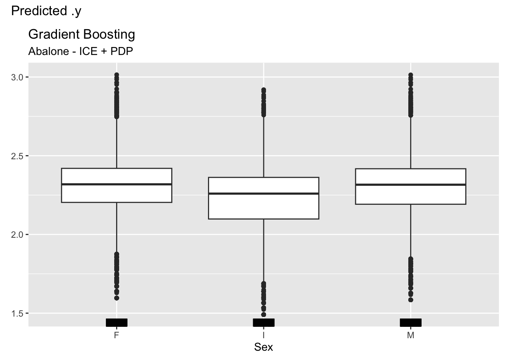
Sex, with three levels.
Another useful feature of the individual conditional expectation plot is centering the predicted responses at a particular value of the input variable. Figure 37.14 shows the predictions for Diameter centered at a value of 0.25 mm. The vertical axis displays the deviation from \(\widehat{f}(X_j=0.25)\).
FeatureEffects$new(aba_model,
features = c("Diameter"),
method="ice",
center.at=0.25) %>% plot()
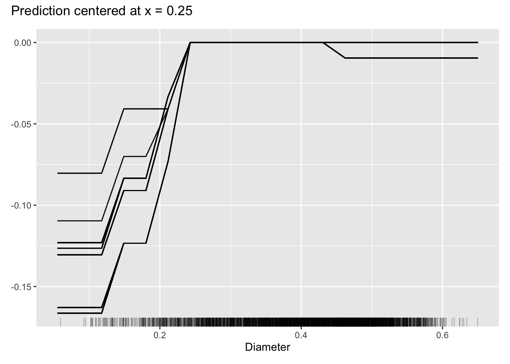
Diameter, centered at diameter of 0.3 mm.
Advantages
An advantage of ICE plots over partial dependence plots is the ability to visualize interactions through the observation-level trends that might get washed out in the PDP. The ICE plots for the abalone data do not suggest interactions, the individual trends and the average trend have the same shape.
A second advantage of the ICE plots is that they aggregate to a meaningful summary, namely the partial dependence plot.
Because they show individual predictions, ICE plots give you a sense of the variability of the predicted values for a given value of a feature. For example, the Diameter plot in Figure 37.12 shows that the number of rings for an animal with diameter 0.4 mm varies by almost 2x, from about 1.7 to 3.2 rings.
Disadvantages
Like the PDP, the ICE plots assume that inputs can vary independently of each other. For the abalone data, this is hardly the case. All of the inputs show large correlations above 0.7–0.8. You cannot pair arbitrary lengths with arbitrary heights or weights of the animals.
For large data sets the ICE plots become very busy, and overlaying thousands of lines might not tell you much.
Variable (Feature) Importance
Ensemble methods such as random forests, adaptive boosting, or gradient boosting machines have their versions of measuring (and displaying) the importance of input variables as drivers of the model. These are based on concepts such as reduction in loss function, increase in purity, frequency of variable selection in trees, etc.
A model-agnostic way of measuring variable importance is based on the simple idea of data permutation. Suppose you have target \(Y\) and used inputs \(X_1, \cdots, X_p\) to derive a model to predict or classify \(Y\). If \(X_j\) is an important variable in the model, then disrupting (destroying) its association with the target variable should lead to a less performant model. On the other hand, if \(X_j\) is not important, then breaking its relationship to \(Y\) should not be of great consequence.
Permutation-based importance analysis of \(X_j\) destroys the feature’s information on the target by randomly shuffling the values for the feature in the data. All other features remain the same. Compare a loss criterion based on the original data with the loss calculated after shuffling \(X_j\). Important variables will show a large increase in loss when shuffled. Unimportant variables will not change the loss as much.
Example: Abalone Age (Cont’d)
The summary of a gbm object displays the relative variable importance as measured by the effect attributable to each input variable in reducing the loss function. For the abalone data, the Shell_Weight and the Shucked_Weight are the most important variables (Figure 37.15).
summary(gbm_fit) var rel.inf
Shell_Weight Shell_Weight 66.0432484
Shucked_Weight Shucked_Weight 16.9001305
Height Height 6.2752199
Sex Sex 4.2170913
Length Length 2.1421675
Diameter Diameter 1.8884405
Whole_Weight Whole_Weight 1.7766336
Viscera_Weight Viscera_Weight 0.7570682
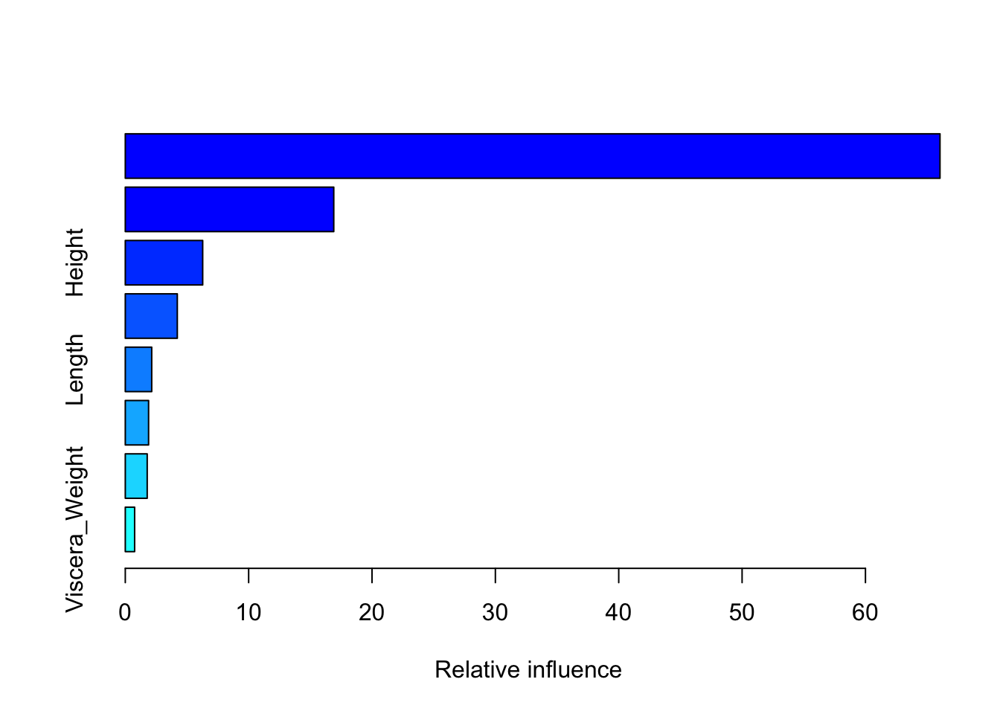
How does this compare to a permutation-based variable importance analysis? The FeatureImp class in the iml package computes feature importance based on a permutation analysis. The following code computes and displays the feature importance based on shuffling each variable twenty times.
FeatureImp$new(aba_model,
loss="mse",
n.repetitions=20) %>% plot()
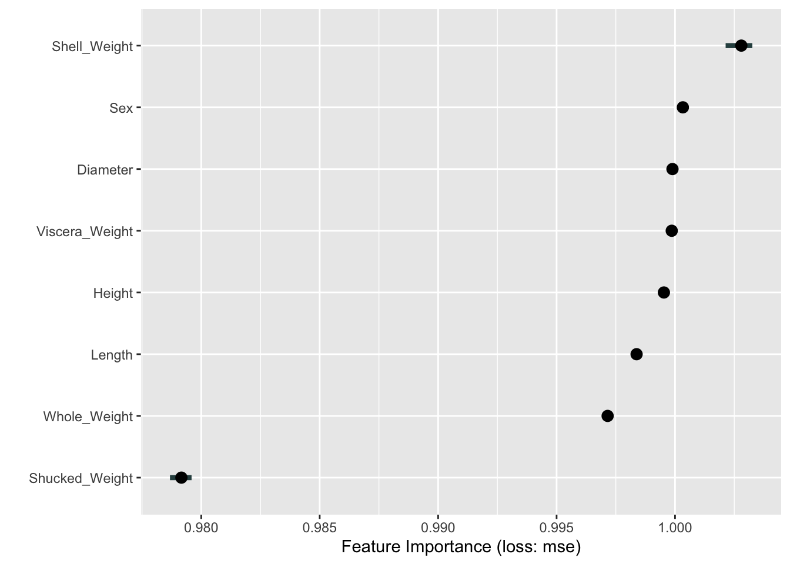
Interestingly, Shell_Weight is the most important driver of the predictions in the permutation-based analysis as well. This is followed by several variables with equal–and large–importance (Figure 37.16). Shucked_Weight, judged second-most important in the boosting model based on the reduction in MSE during training, is considered least important based on the permutation analysis.
The horizontal bars around some of the data points in Figure 37.16 show the variability of the results for the input variable across the 20 repetitions.
Advantages
Feature importance based on permutation is easy to understand: destroy the association between target and feature by shuffling the data and measure the change in loss.
The plot provides a compressed, global insight into the model.
Disadvantages
The plot should be interpreted with caution when features are correlated. Breaking the relationship between \(Y\) and \(X_j\) does not reveal the relative importance of \(X_j\) if its effect can be picked up by other variables with which it is correlated.
Shuffling the data at random can produce unlikely combinations of inputs.
To perform permutation-based variable importance you need access to the original \(Y\) values in the training data. When a model is evaluated based on its predictions alone, that information is probably not available.
The results depend on random processes and can vary greatly from run to run.
Feature importance is based on changes in the loss function and thus depend on whether they are applied to training data or test data. When using it on the training data, it tells us which features the model relies on in making predictions. Features are only “important” in this sense. An overfit model relies on certain features too much.
Surrogate Models
Surrogate modeling applies an interpretable method to shed light on the predictions of an un-interpretable method. For example, you can train a decision tree on the predictions of an artificial neural network.
This is a global method where the performance of the black-box model does not affect the training of the surrogate model. The steps in training a surrogate are as follows:
Choose the data set for which predictions are desired, it can be the original training data set or a test data set.
Compute the predictions from the black-box model.
Train an interpretable model on those predictions and the data set from step 1.
Measure how well the predictions of the surrogate model in 3. agree with the predictions of the black-box model in 2.
If satisfied with the agreement, base interpretation of the black-box model on the interpretable surrogate.
The agreement between black-box and surrogate model is calculated for a qualitative target based on the confusion matrix. For quantitative targets the agreement is based on \(R^2\)-type measures that express how much of the variability in the black-box prediction is explained by the surrogate predictions \[ 1 - \frac{\sum_{i=1}^n \left ( \widehat{y}_i^* - \widehat{y}_i\right )^2} {\sum_{i=1}^n \left( \widehat{y}_i - \overline{\widehat{y}} \right )^2} \tag{37.1}\]
In Equation 37.1 \(\widehat{y}_i^*\) is the prediction for the \(i\)th observation in the surrogate model, \(\widehat{y}_i\) is the prediction from the black-box model, and \(\overline{\widehat{y}}\) is the average black-box prediction.
Example: US Crime Data (MASS)
We are fitting a model to the US crime data in the MASS library using Bayesian Model Averaging (see Chapter 22). This creates an ensemble model where predicted values are a weighted average of the models considered in BMA. Can we find a surrogate model that explains which features are driving the predictions?
Note that this data contains aggregate data on 47 U.S. states from 1960 and that the variables have been scaled somehow. We are not going to overinterpret the results in a contemporary context. The example is meant to highlight the steps in creating a surrogate model.
The following statements fit a regression model by Bayesian Model Averaging to the log crime rate per population. With the exception of the second input variable, an indicator for a Southern state, all other inputs are also log-transformed.
library(MASS)
library(BMA)
data(UScrime)
x <- UScrime[,-16]
y <- log(UScrime[,16])
x[,-2]<- log(x[,-2])
crimeBMA <- bicreg(x,y,strict=FALSE,OR=20)
predBMA <- predict(crimeBMA, newdata=x)$mean
summary(crimeBMA)
Call:
bicreg(x = x, y = y, strict = FALSE, OR = 20)
115 models were selected
Best 5 models (cumulative posterior probability = 0.2039 ):
p!=0 EV SD model 1 model 2 model 3
Intercept 100.0 -23.45301 5.58897 -22.63715 -24.38362 -25.94554
M 97.3 1.38103 0.53531 1.47803 1.51437 1.60455
So 11.7 0.01398 0.05640 . . .
Ed 100.0 2.12101 0.52527 2.22117 2.38935 1.99973
Po1 72.2 0.64849 0.46544 0.85244 0.91047 0.73577
Po2 32.0 0.24735 0.43829 . . .
LF 6.0 0.01834 0.16242 . . .
M.F 7.0 -0.06285 0.46566 . . .
Pop 30.1 -0.01862 0.03626 . . .
NW 88.0 0.08894 0.05089 0.10888 0.08456 0.11191
U1 15.1 -0.03282 0.14586 . . .
U2 80.7 0.26761 0.19882 0.28874 0.32169 0.27422
GDP 31.9 0.18726 0.34986 . . 0.54105
Ineq 100.0 1.38180 0.33460 1.23775 1.23088 1.41942
Prob 99.2 -0.24962 0.09999 -0.31040 -0.19062 -0.29989
Time 43.7 -0.12463 0.17627 -0.28659 . -0.29682
nVar 8 7 9
r2 0.842 0.826 0.851
BIC -55.91243 -55.36499 -54.69225
post prob 0.062 0.047 0.034
model 4 model 5
Intercept -22.80644 -24.50477
M 1.26830 1.46061
So . .
Ed 2.17788 2.39875
Po1 0.98597 .
Po2 . 0.90689
LF . .
M.F . .
Pop -0.05685 .
NW 0.09745 0.08534
U1 . .
U2 0.28054 0.32977
GDP . .
Ineq 1.32157 1.29370
Prob -0.21636 -0.20614
Time . .
nVar 8 7
r2 0.838 0.823
BIC -54.60434 -54.40788
post prob 0.032 0.029 The BMA ensemble comprise 115 individual regression models where the input variables contribute to different degrees. Mean years of schooling (Ed) appears in all models whereas the labor force participation rate (LF) in only 6% of the models. Next we train a decision tree on the predictions to see if we can explain the overall predictions across the 115 models.
Because the data frame has only 47 observations, we set the minsplit parameter of the recursive partitioning algorithm to 10 (the default is 20).
library(rpart)
library(rpart.plot)
surrogate_data <- data.frame(predicted=predBMA,X=x)
set.seed(87654)
t1 <- rpart(predicted ~ . ,
data=surrogate_data,
control=rpart.control(minsplit=10,maxcompete=2),
method="anova")
rpart.plot(t1,roundint=FALSE)
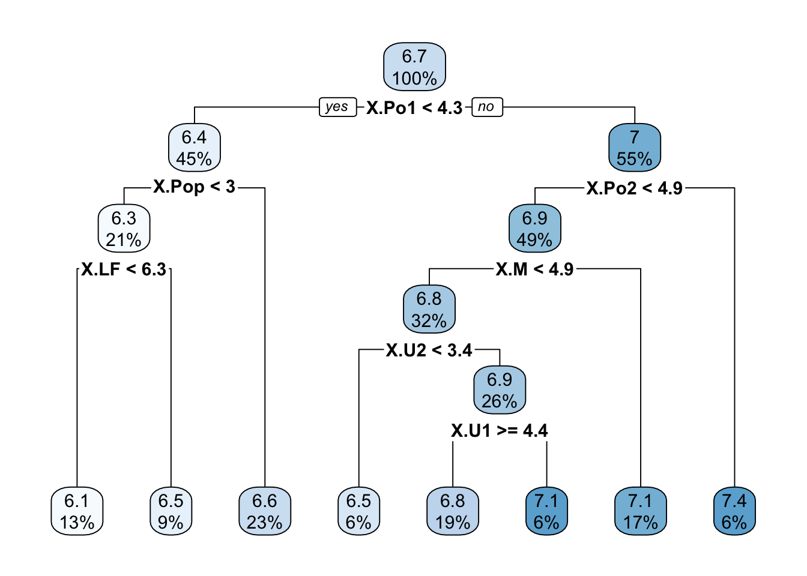
The tree in Figure 37.17 is quite deep and is based on seven variables. How well do the predictions of the tree and the BMA regression agree? The following code chunk computes the \(R^2\) between the two prediction vectors using the lm function.
summary(lm(predBMA ~ predict(t1)))
Call:
lm(formula = predBMA ~ predict(t1))
Residuals:
Min 1Q Median 3Q Max
-0.31638 -0.09604 0.00086 0.08052 0.28606
Coefficients:
Estimate Std. Error t value Pr(>|t|)
(Intercept) 4.190e-15 3.691e-01 0.00 1
predict(t1) 1.000e+00 5.481e-02 18.25 <2e-16 ***
---
Signif. codes: 0 '***' 0.001 '**' 0.01 '*' 0.05 '.' 0.1 ' ' 1
Residual standard error: 0.1296 on 45 degrees of freedom
Multiple R-squared: 0.8809, Adjusted R-squared: 0.8783
F-statistic: 332.9 on 1 and 45 DF, p-value: < 2.2e-16plot(x=predBMA,y=predict(t1),type="p",
xlab="BMA prediction",
ylab="Decision tree prediction",
las=1,bty="l")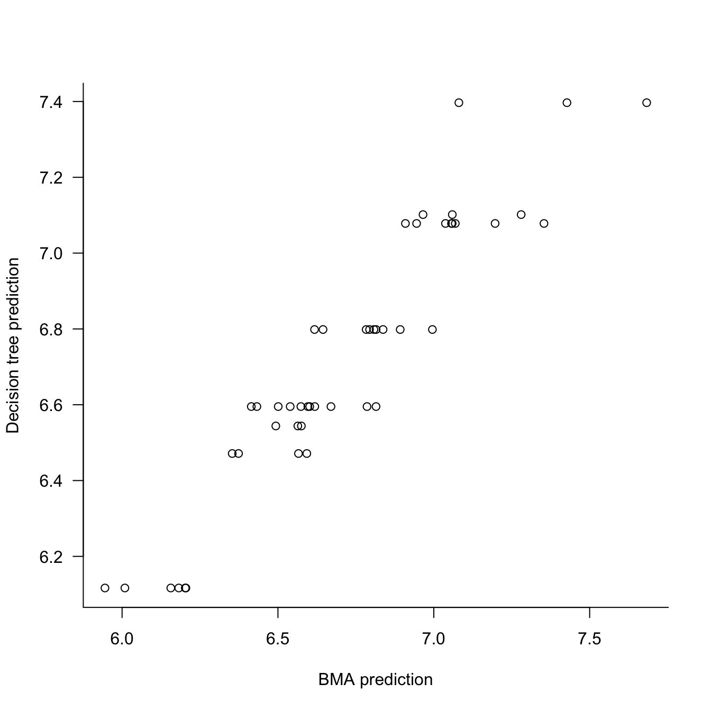
The decision tree explains 88% of the variability in the BMA predictions. The relationship between the two prediction vectors appears linear. The big question is whether we should be satisfied with this level of agreement? And if so, does the surrogate decision tree provided a reasonable explanation of what drives the BMA model?
For example, one could argue that PO1 and PO2, the policing expenditures in two successive years are probably measuring the same thing. Also, U1 and U2 are both unemployment rates, just in two different age groups. Maybe the tree in Figure 37.17 can be simplified.
The cross-validation analysis of rpart shows that a much smaller tree minimizes the cross-validation error.
plotcp(t1)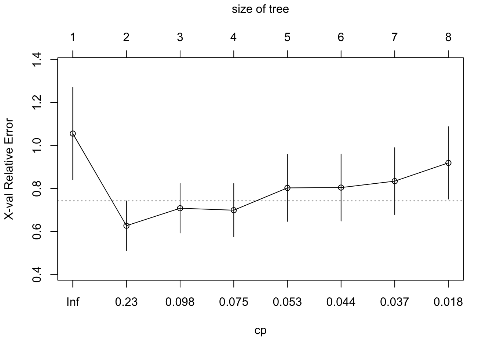
Figure 37.18 shows the trees with two and three terminal nodes.
t2 <- prune(t1,cp=0.1)
t3 <- prune(t1,cp=0.23)
summary(lm(predBMA ~ predict(t2)))$r.squared[1] 0.6058538summary(lm(predBMA ~ predict(t3)))$r.squared[1] 0.5034857par(mfrow=c(1,2))
rpart.plot(t2,roundint=FALSE)
rpart.plot(t3,roundint=FALSE)
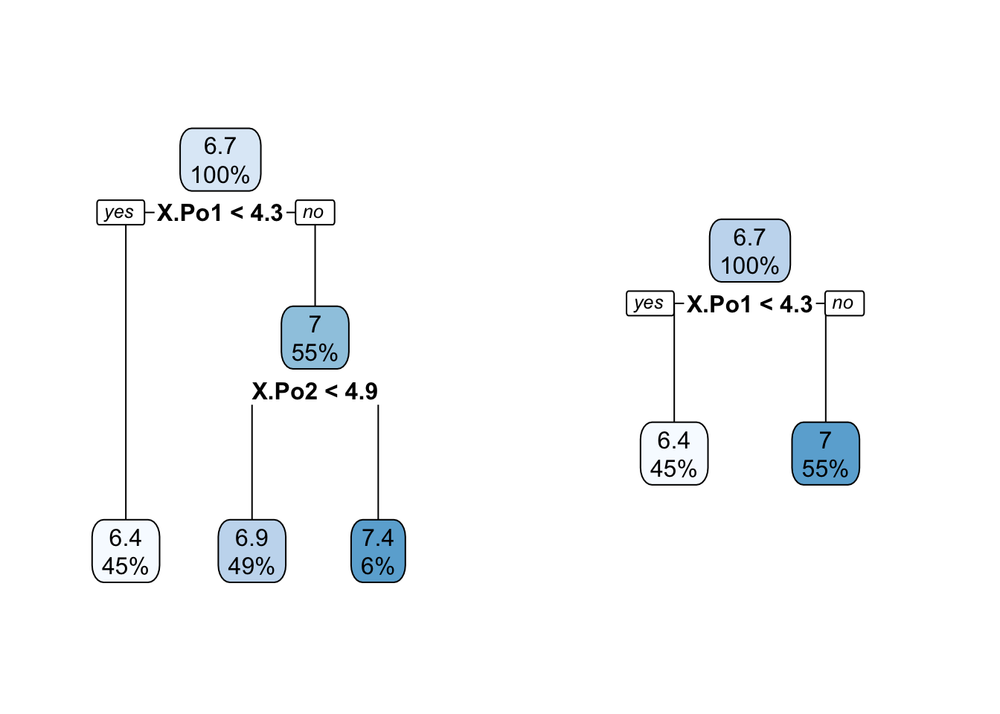
The simpler trees explain only 50% and 60% of the variability in the BMA predictions, yet are much simpler to explain. The trees essentially convey that what drives the BMA predictions are the policing expenditures.
Advantages
The surrogate model approach is flexible, you can use any interpretable model type and apply it to any black-box model. The approach is intuitive, straightforward, and easy to implement.
Disadvantages
The disadvantages of the surrogate model approach outweigh its advantages:
You are replacing one model with another, it can overfit or underfit, and needs to be trained appropriately.
It is not clear what level of agreement between surrogate and black-box predictions is adequate. Is an \(R^2\) of 0.7 enough to rely on the surrogate model for explanations?
You can introduce new input variables in the surrogate model on which the black-box model does not depend.
The surrogate model can work well on one subset of the data and perform poorly on another subset.
The surrogate model never sees the target values in the training data; it is trained on predictions.
There is potential for misuse by guiding the surrogate model toward explanations that fit a narrative.
The surrogate model can give the illusion of interpretability. Remember that you are explaining the predictions of the model, not the underlying process that generated the data. Close agreement between surrogate and black-box predictions for a poorly fitting black-box model means you found a way to reproduce bad predictions.
Local Interpretable Model-Agnostic Explanation (LIME)
Local interpretable model-agnostic explanations (LIME) is a specific local approach to surrogate modeling. It is based on the idea of fitting locally to individual observations interpretable models. Rather than assuming a single global surrogate, a different surrogate is fit to each observation, the data for the local fit comprises small perturbations of the original data in the neighborhood of \(\textbf{x}_i\).
The idea is intuitive. It is as if a complex global model is approximated in the neighborhood of an input vector \(\textbf{x}_i\) by a simple local model. The approach is reminiscent of fitting local models in Section 6.2 with the distinction that we are not using the original data in a neighborhood of \(\textbf{x}_i\), but perturbed samples. Molnar (2022) explains:
LIME tests what happens to the predictions when you give variations of your data into the machine learning model. LIME generates a new dataset consisting of perturbed samples and the corresponding predictions of the black box model. On this new dataset LIME then trains an interpretable model, which is weighted by the proximity of the sampled instances to the instance of interest.
In this sense LIME does not require the training data, as is the case for global surrogate models. It just requires a mechanism to generate data locally near \(\textbf{x}_i\) to which the surrogate model can be fit. For example, the surrogate model might be a multiple linear regression in just two of the inputs.
The steps to train a local surrogate are as follows:
Select the observation \(\textbf{x}_0\) for which you want to explain the prediction of the black-box model.
Perturb the data around \(\textbf{x}_0\) and obtain the black-box prediction for the perturbed data.
Train a weighted, interpretable model to the local data, weighing data points by proximity to \(\textbf{x}_0\).
Explain the black-box prediction using the prediction from the local surrogate model.
In practice, the local models are frequently linear regression models and the perturbations are performed by adding random noise to the inputs. The neighborhood weights are determined by kernel functions with fixed bandwidth. The software requires to select a priori \(p^*\) the number of inputs in the local surrogate model. Which \(p^*\) inputs are chosen is then determined by a feature selection process (variable selection or Lasso with a penalty that leads to \(p^*\) non-zero coefficients).
Advantages
The same surrogate model approach can be used for explanations, regardless of the type of black-box model.
LIME can be applied to tabular data, text, and image data.
It is possible to use different inputs or transformations of the inputs in the local model. For example, one could generate LIME models based on the original variables when interpreting components in a PCA.
Disadvantages
The practical implementation of LIME makes several important choices that have effect on the analysis: for example, the definition of the neighborhood in terms of kernel functions and bandwidths and how to generate samples in the neighborhood.
Generating data sets for the local surrogate model should take into account the covariance structure of the inputs but that is typically ignored.
The LIME explanations are somewhat unstable. Like the global surrogate models, the explanations can be manipulated to fit a narrative. For example, one can choose the predictor variables for the local surrogate. This ensures that all explanations are given in terms of those variables.
Example: Boston Housing Data
The approach to local surrogate modeling taken in the iml package is similar to the original LIME paper, with some differences:
imluses the Gower distance by default instead of a kernel based on Euclidean distance. You can choose other distance metrics withdist.fun=.imlsamples from the data rather than from a normal distribution
We start by fitting a random forest to the Boston housing data and creating an iml predictor object.
data("Boston", package = "MASS")
X <- Boston[,which(names(Boston) != "medv")]
set.seed(98)
rf <- randomForest(medv ~ ., data=Boston, ntree=50)
rf_mod <- Predictor$new(rf, data=X)Explain the first instance of the data set with the LocalModel class using two predictors.
lemon <- LocalModel$new(rf_mod, x.interest=X[1,], k=2)
lemonInterpretation method: LocalModel
Analysed predictor:
Prediction task: unknown
Analysed data:
Sampling from data.frame with 506 rows and 13 columns.
Head of results:
beta x.recoded effect x.original feature feature.value
rm 3.1487444 6.575 20.702995 6.575 rm rm=6.575
lstat -0.2836397 4.980 -1.412526 4.98 lstat lstat=4.98The beta column shows the coefficients for the local model at the particular \(\textbf{x}\) location, here we have a linear regression model with \(medv = \beta_0 +\) 3.1487 \(*6.575 +\) -0.2836 \(*4.98\). The effect is the product of the coefficient with the \(x\)-value. So, \(medv = \beta_0 +\) 20.703 + -1.4125. Unfortunately, the intercept is not shown, but you can infer it by predicting from the local model at \(x\):
predict(lemon) prediction
1 25.96882The plot function shows the predictions in terms of effect sizes \(\beta_jx_j\), see Figure 37.19. The local model predicts the median housing value for the first observation as 25.95, the black-box model predicted a value of 24.75. The local prediction is mostly driven by a positive effect from variable rm with a negative effect from lstat.
plot(lemon)
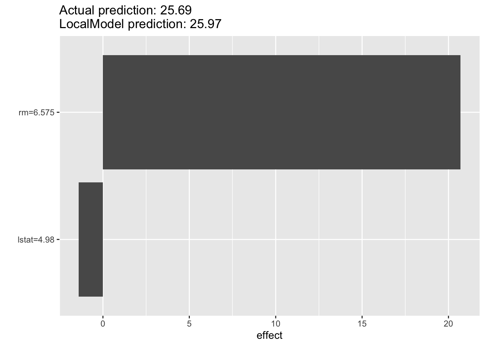
The iml package supports reuse of objects. After creating a new model, you can use it to explain other observations of interest. Here is a local surrogate with \(p^* = 3\) and explanations for the first three observations.
lemon <- LocalModel$new(rf_mod, x.interest=X[1,], k=3)
lemon$results beta x.recoded effect x.original feature feature.value
rm 4.4211584 6.575 29.069117 6.575 rm rm=6.575
ptratio -0.5263060 15.300 -8.052482 15.3 ptratio ptratio=15.3
lstat -0.4142289 4.980 -2.062860 4.98 lstat lstat=4.98lemon$explain(X[2,])
lemon$results beta x.recoded effect x.original feature feature.value
rm 4.2555509 6.421 27.324892 6.421 rm rm=6.421
ptratio -0.5373882 17.800 -9.565510 17.8 ptratio ptratio=17.8
lstat -0.4217386 9.140 -3.854691 9.14 lstat lstat=9.14lemon$explain(X[3,])
lemon$results beta x.recoded effect x.original feature feature.value
rm 4.3786461 7.185 31.460572 7.185 rm rm=7.185
ptratio -0.5306840 17.800 -9.446175 17.8 ptratio ptratio=17.8
lstat -0.4173738 4.030 -1.682016 4.03 lstat lstat=4.03Shapley Additive Explanation (SHAP)
SHAP is an approach to explainability that has gained much momentum. It is based on Shapley values, introduced in a game-theoretic consideration on how to fairly distribute the payout among players in a coalition based on their individual contributions (Shapley 1953).
Besides the grounding in theory, SHAP has other appealing properties: the local Shapley values on which it is based can be aggregated into meaningful global values. Shapley values are the foundation for partial dependence, feature importance and other analyses. And because it can be applied locally and globally, SHAP provides many of the previously discussed explainability tools on a single foundation.
Before we can understand how SHAP works, we need to understand what Shapley values are. Otherwise we would be explaining a black box model with black box measures—that would be ironic.
Shapley Values
Shapley (1953) considered the following problem: a group (coalition) of players are playing a game, and as part of the game play there is a gain for the group. How should the gain be paid out fairly among the players in accordance with their contributions toward the gain?
How does this consideration translate to predictions in statistical models?
- The game is making a prediction using a statistical model.
- The players in the game are the features (inputs) of the model.
- The coalition is a particular collection of features, not all of which may be present.
- The gain is the difference between the prediction and some baseline.
- The payout is the distribution of the gain among the features according to their contribution toward the prediction.
Shapley values quantify the contribution each feature makes to the model’s prediction.
Definition: Shapley Value of a Feature
The Shapley value of a feature is the (weighted) average of its marginal contributions to all possible coalitions.
The marginal contribution of a feature is the difference between a prediction in a model with and without the feature present.
A coalition is a combination of features. In a model with \(p\) features (inputs) there are \(2^p\) possible coalitions (all possible subsets).
The weight of the marginal contribution to a model with \(m\) features is the reciprocal of the number of possible marginal contributions to all models with \(m\) features.
An example adapted from Mazzanti (2020) will make these concepts tangible.
Suppose we want to predict a person’s income based on their age, gender, and job. The eight possible models—the eight coalitions—are
{kind=link}
Imagine that we fit the eight different models to the training data and for some input vector \(\textbf{x}_0\) we perform the predictions. The predicted values are shown in Figure 37.21.
{kind=link}
Next we compute the marginal contributions of the features. The calculation is detailed for Age in Figure 37.22.
{kind=link}
To do this for feature Age, we consider the possible coalitions where age is added to a model as you move from one stage of the hierarchy to the next. Starting from the empty model (no inputs), there is one model of the single-input model that differs by the presence of Age. The difference in predicted value is \(-\$10K\).
Similarly, when moving from the single-predictor models to the two-predictor models there are two models that differ in the presence of the Age variable. The change in predicted value by adding Age as a predictor is \(-\$9K\) and \(-\$15K\). Finally, there is a single model that adds Age to the two-predictor model, with a change in predicted value of \(-\$12K\).
The weight assigned to the changes in predicted value is the reciprocal of the number of green lines (dotted and solid) at each level of the hierarchy.
Putting it all together gives the Shapley value for Age: \[ \text{Shap}(Age) =\frac13 (-\$10K) + \frac16 (-\$9K) + \frac16 (-\$15K) + \frac13 (-\$12K) = -\$11.33K \] Similar calculations for the other features yield \[ \text{Shap}(Gender) = -\$2.33K \] \[ \text{Shap}(Job) = \$46.66K \] These are the payout contributions to the features. If you add them up you obtain the total payout of \[ \text{Shap}(Age) + \text{Shap}(Gender) + \text{Shap}(Job) = -\$11.33K - \$2.33K + \$46.66K = \$33K \] This total payout is also the difference between the null model without inputs and the full model with three inputs—the gain of the prediction.
In practice we do not fit all possible (\(2^p\)) models. Several modifications are necessary to make the Shapley values computationally feasible in our context:
- The gain is calculated as the difference between \(\widehat{y}(\textbf{x}_0)\) and the average of all predictions.
- Features not in the coalition are replaced by randomly selected values rather than considering all possible coalitions.
Additional approximations and sampling are put in place to make the Shapley values computationally feasible (reasonable).
Shapley Values with iml
Example: Banana Quality (Cont’d)
We return to the banana quality data to compute the Shapley values for a model trained with a support vector machine.
The following statements compute a SVM with radial kernel based on all input variables except Weight and generates a matrix of predicted probabilities.
library(caret)
library(e1071)
ban.svm <- svm(as.factor(Quality) ~ Size + Sweetness + Softness +
HarvestTime + Ripeness + Acidity,
data=ban_train,
kernel="radial",
probability=TRUE,
cost=3,
gamma=1/7,
scale=TRUE)
ban.svm.pred <- predict(ban.svm,newdata=ban_test,probability=TRUE) The next code chunk sets up the iml predictor object and computes the variable importance plot based on permutation. The loss criterion for the classification model is cross-entropy (loss="ce"). Softness, Sweetness, and HarvestTime emerge as the most important variables. Note, however, the substantial variation in the importance measures.
ban.X = ban_train[,which(names(ban_train) != "Quality")]
ban.X = ban.X[,which(names(ban.X) != "Weight")]
ban.model = Predictor$new(model=ban.svm,
data=ban.X,
y=ban_train$Quality)
set.seed(876)
FeatureImp$new(ban.model,
loss="ce",
n.repetitions=25) %>% plot()
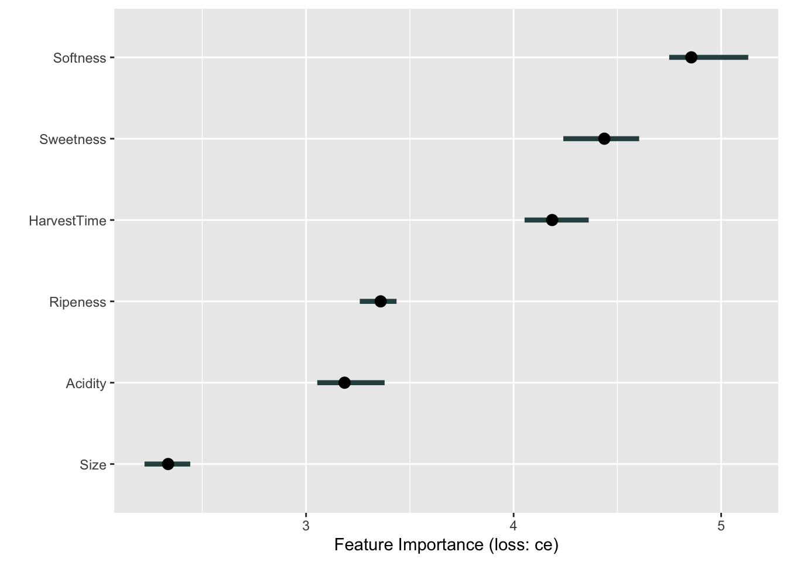
The following code computes the Shapley values of the SVM classification for the first observation:
set.seed(6543)
ban.shap <- Shapley$new(ban.model,x.interest=ban.X[1,])
ban.shap$results feature class phi phi.var feature.value
1 Size Bad -0.04 0.03878788 Size=1.7066437
2 Sweetness Bad 0.08 0.09454545 Sweetness=-4.4634495
3 Softness Bad 0.00 0.08080808 Softness=-1.5100472
4 HarvestTime Bad -0.48 0.25212121 HarvestTime=4.5640225
5 Ripeness Bad 0.00 0.08080808 Ripeness=-0.041712634
6 Acidity Bad -0.04 0.03878788 Acidity=4.3266883
7 Size Good 0.04 0.03878788 Size=1.7066437
8 Sweetness Good -0.08 0.09454545 Sweetness=-4.4634495
9 Softness Good 0.00 0.08080808 Softness=-1.5100472
10 HarvestTime Good 0.48 0.25212121 HarvestTime=4.5640225
11 Ripeness Good 0.00 0.08080808 Ripeness=-0.041712634
12 Acidity Good 0.04 0.03878788 Acidity=4.3266883The phi column displays the difference in predicted probabilities from the baseline, which is the average prediction across the data set.
ban.shap$y.hat.average Bad Good
0.50725 0.49275 sum(ban.shap$results[1:7,3])[1] -0.44The predicted probabilities for the first observation are
attr(ban.svm.pred,"probabilities")[1,] Good Bad
0.96399502 0.03600498 The phi values for class="Bad" are the mirror image of those for class="Good". HarvestTime has the largest contribution to the difference between the predicted probability and the average prediction. Next is Sweetness which increases the probability of good banana qualityl
The plot method displays the Shapley values graphically (Figure 37.24).
plot(ban.shap)
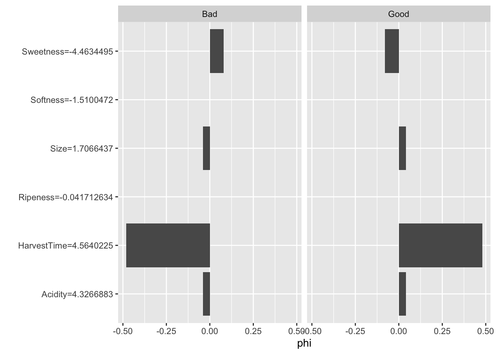
For the second observation the predicted probability of Good banana quality is even higher than for the first observation. The Shapley values reveal that Size is the primary driver of the predicted probability for that instance, rather than HarvestTime (Figure 37.25)
attr(ban.svm.pred,"probabilities")[1:2,] Good Bad
1 0.9639950 0.036004976
2 0.9969397 0.003060289ban.shap$explain(ban.X[2,])
plot(ban.shap)
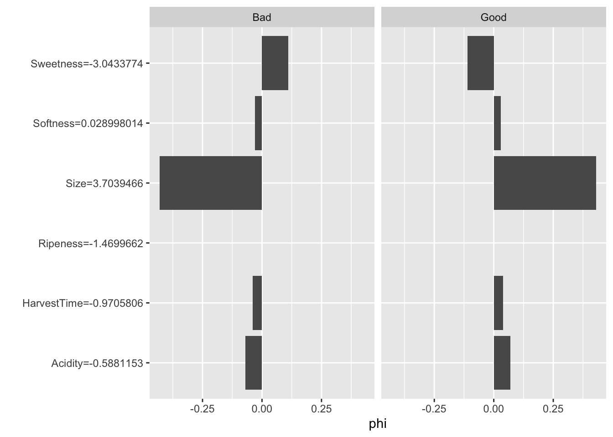
SHAP
Lundberg and Lee (2017) introduced SHapley Additive exPlanation (SHAP) values as a unified approach to explaining model predictions and feature importance.
SHAP is based on Shapley values and represents Shapley value explanation as an linear model of feature attributions, creating a connection to LIME models with local linear structure. Because of the computational demand to compute Shapley values, Lundberg and Lee (2017) propose several approximations, some model-agnostic and some model-specific. The model-agnostic SHAP approximation combines LIME with Shapely values and is known as KernelSHAP. In a later paper Lundberg, Erion, and Lee (2018) proposed the model-specific TreeSHAP for tree-based methods.
Another feature of SHAP is a useful collection of tools to aggregate and visualize measures based on Shapley values, such as force plots, Shapley summaries, dependence plots, etc.
An implementation of TreeSHAP for XGBoost inR is available in the SHAPforxgboost package.
Example: Glaucoma Database
We return to the Glaucoma data analyzed in the chapter on Boosting (Chapter 21). The following code chunks recreate the training and test data from that chapter and fit an XGBoost model for binary classification.
library("TH.data")
data( "GlaucomaM", package="TH.data")
set.seed(5333)
trainindex <- sample(nrow(GlaucomaM),nrow(GlaucomaM)/2)
glauc_train <- GlaucomaM[trainindex,]
glauc_test <- GlaucomaM[-trainindex,]library(xgboost)
Glaucoma = ifelse(GlaucomaM$Class=="glaucoma",1,0)
glauc_train$Glaucoma <- Glaucoma[ trainindex]
glauc_test$Glaucoma <- Glaucoma[-trainindex]
dataX <- as.matrix(glauc_train[,1:62])
xgdata <- xgb.DMatrix(data=dataX,
label=glauc_train$Glaucoma)
xgtest <- xgb.DMatrix(data=dataX,
label=glauc_test$Glaucoma)
set.seed(765)
xgb_fit <- xgb.train(data=xgdata,
watchlist=list(test=xgtest),
max.depth=3,
eta=0.05,
early_stopping_rounds=15,
subsample=0.5,
objective="binary:logistic",
nrounds=100
)[1] test-logloss:0.691143
Will train until test_logloss hasn't improved in 15 rounds.
[2] test-logloss:0.691066
[3] test-logloss:0.690617
[4] test-logloss:0.690792
[5] test-logloss:0.690083
[6] test-logloss:0.690760
[7] test-logloss:0.692218
[8] test-logloss:0.694467
[9] test-logloss:0.696919
[10] test-logloss:0.699999
[11] test-logloss:0.701853
[12] test-logloss:0.704680
[13] test-logloss:0.709163
[14] test-logloss:0.716283
[15] test-logloss:0.717489
[16] test-logloss:0.720253
[17] test-logloss:0.722769
[18] test-logloss:0.727558
[19] test-logloss:0.735394
[20] test-logloss:0.744886
Stopping. Best iteration:
[5] test-logloss:0.690083shap.values extracts the SHAP values from the xgboost object. The mean_shap_score vector contains the averaged SHAP values for each feature, ranked from largest to smallest (absolute value). It also functions as a ranking of feature importance. Seven of the features have average SHAP values different from zero, many of the features in the Glaucoma database were not used in the XGBoost model.
library(SHAPforxgboost)
library(ggplot2)
shap_values <- shap.values(xgb_model=xgb_fit, X_train=dataX)
shap_values$mean_shap_score vari tms phci phcg mv phcn
0.127955418 0.103766854 0.073036527 0.023943328 0.015380792 0.014420251
mhcg ag at as an ai
0.008273273 0.000000000 0.000000000 0.000000000 0.000000000 0.000000000
eag eat eas ean eai abrg
0.000000000 0.000000000 0.000000000 0.000000000 0.000000000 0.000000000
abrt abrs abrn abri hic mhct
0.000000000 0.000000000 0.000000000 0.000000000 0.000000000 0.000000000
mhcs mhcn mhci phct phcs hvc
0.000000000 0.000000000 0.000000000 0.000000000 0.000000000 0.000000000
vbsg vbst vbss vbsn vbsi vasg
0.000000000 0.000000000 0.000000000 0.000000000 0.000000000 0.000000000
vast vass vasn vasi vbrg vbrt
0.000000000 0.000000000 0.000000000 0.000000000 0.000000000 0.000000000
vbrs vbrn vbri varg vart vars
0.000000000 0.000000000 0.000000000 0.000000000 0.000000000 0.000000000
varn mdg mdt mds mdn mdi
0.000000000 0.000000000 0.000000000 0.000000000 0.000000000 0.000000000
tmg tmt tmn tmi mr rnf
0.000000000 0.000000000 0.000000000 0.000000000 0.000000000 0.000000000
mdic emd
0.000000000 0.000000000 Before calling the visualization functions in the SHAPforxgboost package, the SHAP values are converted into a long-format data frame. Only the 10 most important features are being kept in this application, as we have already seen that most features did not contribute to the XGBoost model.
The summary plot shows the SHAP values for these variables (Figure 37.26). The plot combines local information (the SHAP values for the individual observations) with global information (the ranking of features by importance based on the aggregated SHAP values.) The coloring of the points in the summary plot relates to the value of the specific feature. For example, low values of the vari input variable increase the SHAP value, and large values decrease the SHAP value. The opposite is true for the tms variable. These are the two most important drivers of predictions in the model, followed by phci.
shap_long <- shap.prep(xgb_model=xgb_fit,
X_train = dataX,
top_n=10)
shap.plot.summary(shap_long)
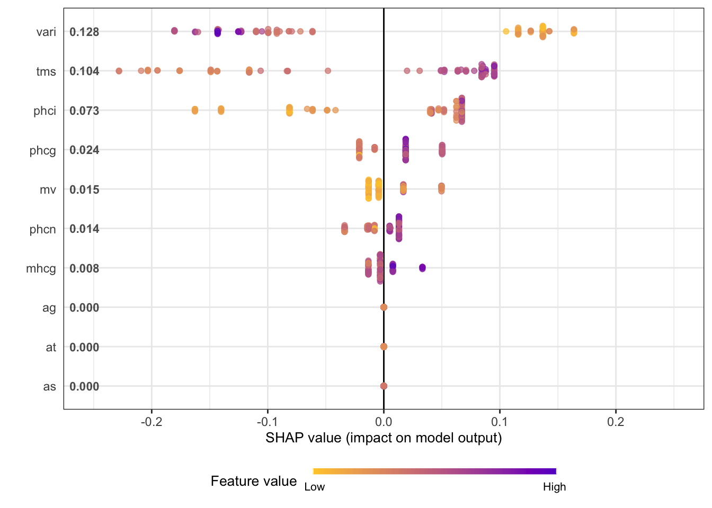
The next series of figures displays dependence plots for the four most important features. The feature values appear on the horizontal axis, the SHAP values on the vertical axis. These plots are the SHAP-based versions of the partial dependence plots discussed earlier. They show how the SHAP values change as a function of the feature values. The color of the points is varied by another feature, selected as the feature that minimizes the variance of the SHAP values given both features. The feature chosen for coloring suggests a strong interaction with the input featured in the dependence plot.
for (i in 1:4) {
x <- shap.importance(shap_long, names_only = TRUE)[i]
p <- shap.plot.dependence(
shap_long,
x = x,
color_feature = "auto",
smooth = FALSE,
jitter_width = 0.01,
alpha = 0.7)
print(p)
}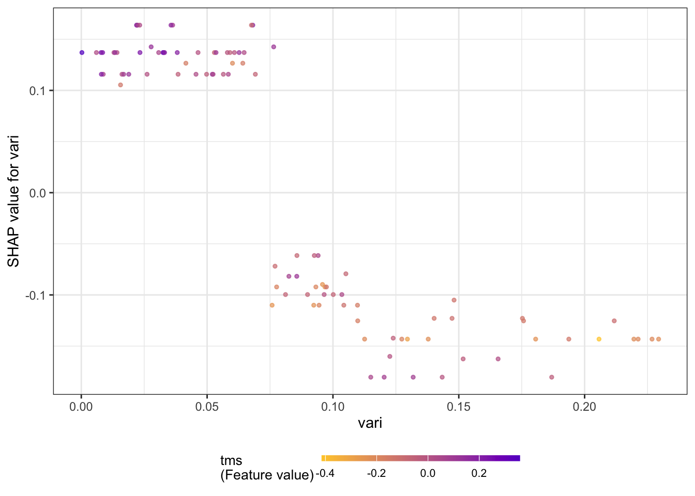
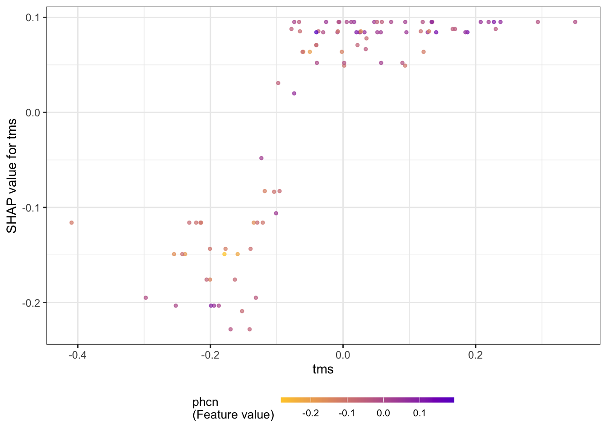
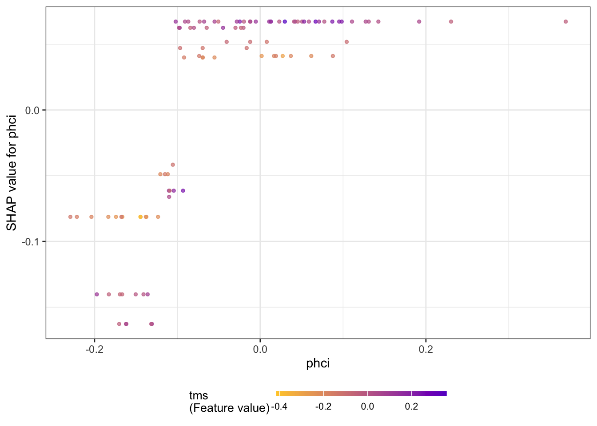
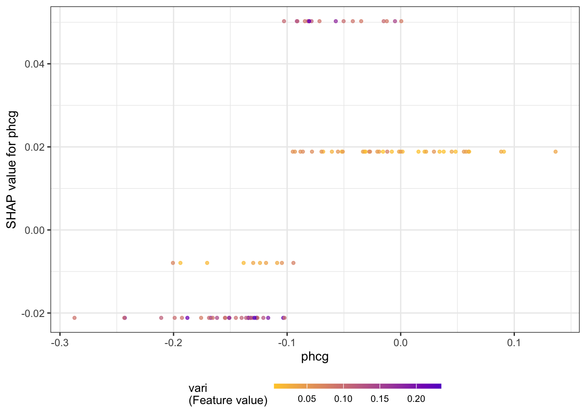
Figure 37.27 displays a force plot; it shows how various features contribute to the overall SHAP value for an observation.
plot_data <- shap.prep.stack.data(shap_contrib=shap_values$shap_score,
top_n=5,
n_groups=10)
shap.plot.force_plot(plot_data,
zoom_in_group=4,
y_parent_limit = c(-0.5,0.5))
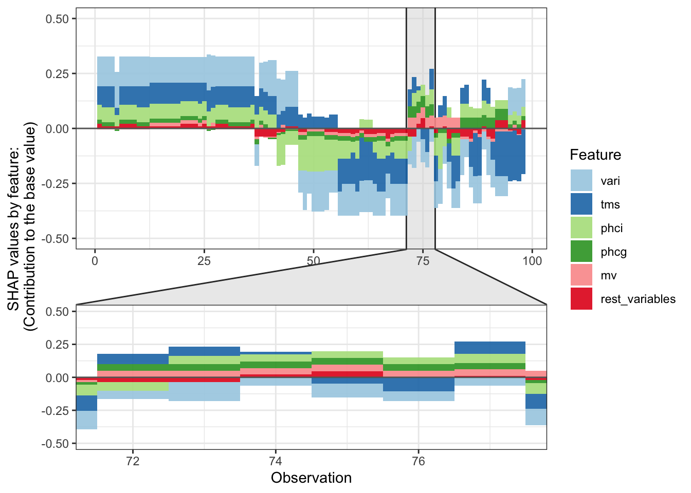
37.3 Takeaways
We summarize some of the main takeaways from this chapter.
Explainability tools are a great asset to the data scientist. They can help us understand better how a model works, what drives it, and help formulate a human-friendly explanation.
Explainability tools are not free of assumptions and not free of user choices that affect their performance.
There is an ever increasing list of methods. Know their pros and cons. What is needed changes from application to application. Global explanations can be appropriate in one setting while observation-wise (local) explanations can be called for in another setting.
Methods based on Shapley values have several nice properties
- Grounded in (game) theory
- Feature contributions add up to deviations from the average
- Changes to a model that increase the marginal contribution of a feature also increase the features’ Shapley values
- Combines local and global information
- Addresses multiple aspects: dependence, variable importance, effect force